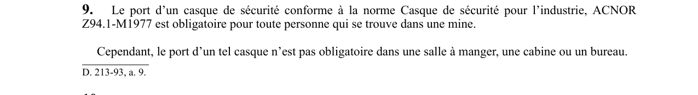

art-9-RSSM : port casque sécurité mine
Un article du wiki ⚖️ Recueil législatif
🌐 LegisQuébec · 📄 PDF officiel
Texte officiel : capture du PDF

🔗 Voir art. 9 RSSM dans le PDF (page 9)
Version : texte officiel du RSSM (RLRQ c. S-2.1, r. 14), à jour au 1er mai 2024 — Éditeur officiel du Québec
En bref
Le port d'un casque de sécurité conforme à la norme Casque de sécurité pour l'industrie, ACNOR Z94.1-M1977. Il s'agit d'une obligation.
- Obligatoire partout sauf salle à manger, cabine ou bureau.
- Norme ACNOR Z94.1-M1977.
Voir aussi
- art. 7 : systèmes ancrage harnais certifiés · obligation : la liaison antichute doit être fixée à un système d'ancrage ponctuel (résistance ≥ 18 kN, ou plan d'ingénieur conforme à CSA Z259.16), à un système continu flexible.
- art. 8 : protection chute objets travailleurs · obligation : lorsqu'un travail est exécuté au-dessus d'un travailleur, celui-ci doit être protégé contre la chute d'objets au moyen d'une porte, d'un écran ou d'un abri.
- art. 10 : port lunettes protection mine · le port de lunettes de protection ajustées à la vue ou d'un écran facial conformes à la norme CAN/CSA Z94.3-M1988 est obligatoire pour toute personne se trouvant dans une mine, sauf dans une salle à manger, une cabine ou un bureau.
- art. 11 : chaussures protection vêtements haute visibilité · obligation : le port de chaussures de protection conformes à CAN/CSA Z195-M92 (sauf sous-section 3.4) est obligatoire pour toute personne dans une mine ; en mine souterraine, ces chaussures doivent comporter un protecteur métatarsien.
- ⚖️ Loi habilitante : LSST
- ↑ Index du bloc : Dispositions générales
Pages qui pointent ici (5)
- art-10-RSSM, port lunettes protection mine Recueil législatif
- art-11-RSSM, chaussures protection vêtements haute visibilité Recueil législatif
- art-7-RSSM, systèmes ancrage harnais certifiés Recueil législatif
- art-8-RSSM, protection chute objets travailleurs Recueil législatif
- RSSM - Dispositions générales (art. 1-11) Recueil législatif